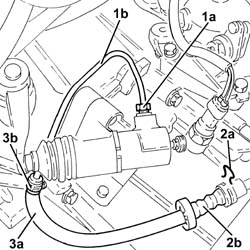
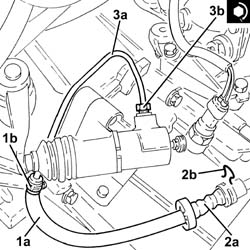

1820B54 hose from damper - r r
- Path
- Procedures > 18 CLUTCH > 1820 CLUTCH RELEASE CONTROLS > 1820B HYDRAULIC CLUTCH SYSTEM > 1820B54 hose from damper - r r
- Kind
- repair procedure (removal / refitting; the operation number is the code)
- Applies to
- engines: 3.2 V6, 1.9 JTD 16V; all production periods
- Interactive page
- https://sloeber94.github.io/elrnDB-a147/en/#/3025115
Applies to: engines: 3.2 V6; all production periods
 Removing
Removing
 Refitting
RefittingProceed with removal 5530B10 battery - r+r .
Proceed with removal 5530B52 Battery DRIP TRAY/SUPPORT - R.R. .
Remove the protective cap on the master cylinder bleed valve.
Connect the collection system (pipe and reservoir) to the bleed valve on the clutch operating cylinder.
Operate the clutch pedal until the brake-clutch fluid reservoir is empty.
1. Undo the connector (1a) and disconnect the pipe from the vibration damper to the operating cylinder (1b), operating cylinder side.
2. Remove the split pin (2a) and disconnect the pipe from the vibration damper to the operating cylinder (2b), vibration damper side.
3. Remove the pipe from the vibration damper to the operating cylinder (3a) after having released it from the band (3b).

Applies to: engines: 3.2 V6; all production periods
Refitting
Removing1. Place the pipe from the vibration damper to the operating cylinder (1a) back in its housing and secure it to the band (1b).
2. Connect the pipe from the vibration damper to the operating cylinder (2a), vibration damper side and secure it using the split pin (2b).
3. Connect the pipe from the vibration damper to the operating cylinder (3a), operating cylinder side and tighten the connector (3b) to the recommended torque.
 | Fastening | Component | Ø | Value (daNm) |
|---|---|---|---|---|
3b | - | - | - | - |

Applies to: engines: 3.2 V6; all production periods
Bleed the air and top up the level in the hydraulic clutch system 0010T67 hydraulic clutch system bleed air .
Bleed the air from the hydraulic braking system 0010T65 hydraulic brake system bleed air .
Proceed with refitting 5530B52 Battery DRIP TRAY/SUPPORT - R.R. .
Proceed with refitting 5530B10 battery - r+r .
Applies to: engines: 1.9 JTD 16V; all production periods
Removing
RefittingProceed with removal 7025A12 Engine front sound insulation COVER - R.R. .
Proceed with removal 7025A14 Bonnet LID - R.R. .
Proceed with removal 1016A10 sound-proofing cover - r + r .
Proceed with removal 5530B10 battery - r+r .
Proceed with removal 5530B52 Battery DRIP TRAY/SUPPORT - R.R. .
Remove the protective cap on the master cylinder bleed valve.
Connect the collection system (pipe and reservoir) to the bleed valve on the clutch operating cylinder.
Operate the clutch pedal until the brake-clutch fluid reservoir is empty.
1. Undo the connector (1a) and disconnect the pipe from the vibration damper to the operating cylinder (1b), operating cylinder side.
2. Remove the split pin (2a) and disconnect the pipe from the vibration damper to the operating cylinder (2b), vibration damper side.
3. Remove the pipe from the vibration damper to the operating cylinder (3a) after having released it from the band (3b).
Applies to: engines: 1.9 JTD 16V; all production periods
Refitting
Removing1. Place the pipe from the vibration damper to the operating cylinder (1a) back in its housing and secure it to the band (1b).
2. Connect the pipe from the vibration damper to the operating cylinder (2a), vibration damper side and secure it using the split pin (2b).
3. Connect the pipe from the vibration damper to the operating cylinder (3a), operating cylinder side and tighten the connector (3b) to the recommended torque.
| Fastening | Component | Ø | Value (daNm) |
|---|---|---|---|---|
3b | - | - | - | - |
Applies to: engines: 1.9 JTD 16V; all production periods
Bleed the air and top up the level in the hydraulic clutch system 0010T67 hydraulic clutch system bleed air .
Bleed the air from the hydraulic braking system 0010T65 hydraulic brake system bleed air .
Proceed with refitting 5530B52 Battery DRIP TRAY/SUPPORT - R.R. .
Proceed with refitting 5530B10 battery - r+r .
Proceed with refitting 1016A10 sound-proofing cover - r + r .
Proceed with refitting 7025A14 Bonnet LID - R.R. .
Proceed with refitting 7025A12 Engine front sound insulation COVER - R.R. .